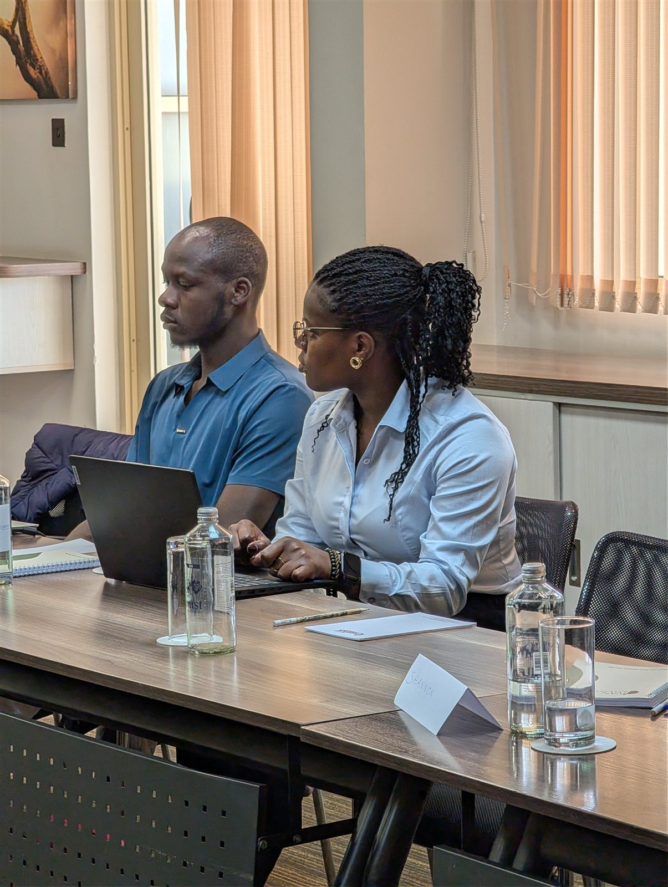

From Janet
Notes from the work.
Reflections on training, certification and the moments, clinical and otherwise, that continue to shape how Janet practises.

Reflection
A room full of women, finally off the clock
Dancing, real conversations, and women in healthcare trading numbers they meant to use, notes from the Women in Healthcare Dinner.
Read the story →
rTMS · Training
The rTMS training at Naya: finding the motor threshold
Hands-on practicals with specialists from Naya Health, London, and the session where the group couldn't find a motor threshold, and had to learn how to search.
Read the story →
rTMS · Certification
Now I can actually call myself an rTMS practitioner
On completing certification through the Academy of Brain Stimulation, and what rTMS offers people who haven't found relief through therapy or medication alone.
Read the story →
Reflection
Four rooms, four different reasons to be in them
A training, a padel event, an OSHA course and a doctors' breakfast on rTMS: four unconnected rooms, and what stayed with her from each.
Read the story →Curious about rTMS?